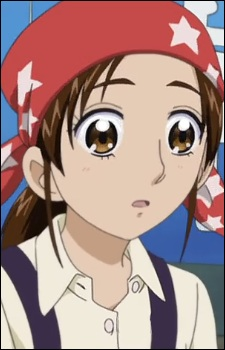

Mikako Fujita is a Japanese voice actress.
- Gender: Female
- Birthday: March 25, 1972
- hometown: Shizuoka, Japan
| |
Mikako Fujita is a Japanese voice actress.
|
|
|---|
|  | Akane Fujita |
|
Akane Fujita owns and operates the tako cafe. She is the person that the girls talk to if they have problems at school or with their ordinary lives. She has a headstrong personality and shows a lot of self-confidence. |